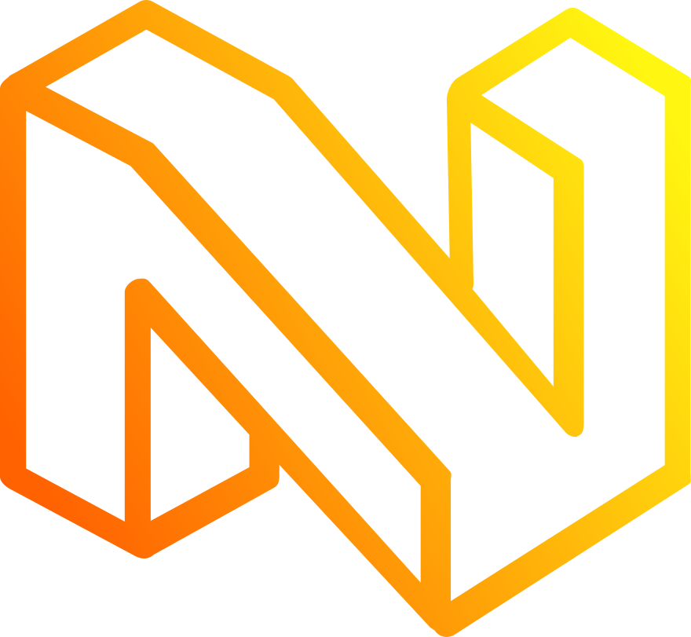

NEURAXLE
BUILD NEAT ML PIPELINES
Neuraxle is a Machine Learning (ML) library for building clean machine
learning pipelines using the right abstractions.
Compatible with deep learning frameworks and the scikit-learn API, it can stream minibatches, use data checkpoints, build funky pipelines, and serialize models with custom per-step savers.
⚡️ Component-Based
Build encapsulated steps, then compose them to build complex pipelines.
🔥 Evolving State
Each pipeline step can fit, and evolve through the learning process
🎛 Hyperparameter Tuning
Optimize your pipelines using AutoML, where each pipeline step has their own hyperparameter space.
🔌 Compatible
Use your favorite machine learning libraries inside and outside Neuraxle pipelines.
🚀 Production Ready
Pipeline steps can manage how they are saved by themselves, and the lifecycle of the objects allow for train, and test modes.
🏹 Streaming Pipeline
Transform data in many pipeline steps at the same time in parallel using multiprocessing Queues.